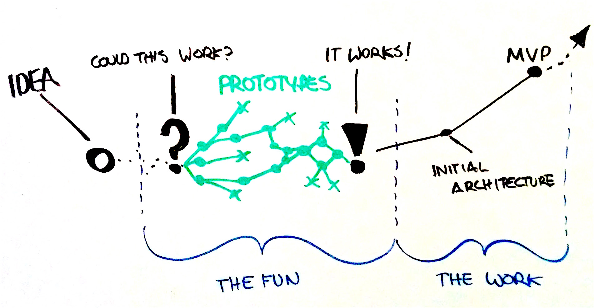

Multi-skilled technical architect with extensive experience in designing, developing and deploying commercial software architecture. Possessing proven ability to contribute individually and lead project teams to successfully deliver high performance and secure solutions of the highest quality. Passionate about investigating and implementing new ideas, concepts, technologies. 14 years of software development experience on full stack. Machine learning practitioner, with focus on Computer Vision, and NLP and Drones enthusiast.
I'm interested in working on new products and implementation that disrupt the current set limitations, pratice and acceptance. I go above and beyond to find those opportunities in my line of work. I believe data is king. I believe AI is the new electricity. Value is generated when we can extract the knowledge from the data by leveraging technology.
I've found I am most effective being involved early in the product-development process, especially in the prototyping phase. The diagram shows the progression of an idea to Minimum Viable Product as I see it. Often times the first question to follow an interesting idea is "Could this work?", and my favorite thing to do is figuring out if it could. After figuring out that it does indeed work, the hard but neccessary part for me is developing the functional prototype into some sort of minimum viable state that can be consumed. There is lot of tinkering, lot of learning to get to this state. There is of course still a lot that needs to happen before a product can ship, but now comes the state where everthing needs to be documented and proper watch to ensrue that everyone understands the architecutre and work is mesaured with quality in focus.
The Work, The Fun continues in an endless loop. The Work dosen't exist without the Fun and the Fun dosen't exist without the Work.
My biggest USP is my ability to balance between the FUN and the WORK part. I take pride in my work. I consider myself an evanglist and self motivated to drive an idea from vision to product. My years of experience in working with diverse people, and methodologies, and process gives me the edge to go out of the box when needed while still adhering the process and meeting the deadlines.
GPA: 3.7
80%
Apart from being a developer, I enjoy most of my time in developing new hobbies. My newest addition is robotics, working on bulding full scale humanoid using InMoov opensource stack. I also have built 3d printers using the Prusa Opensource harware and software platfrom. I have built several RC scale models using the 3d printer and love puting them together.
When not coding or tinkering, I enjoy aquascapping and aquarium care. I love stargazing and have 2 telescopes in my arsenel. I have just started getting into astophotography. I am also an aspiring pilot, and I spend a large amount of my free time exploring the latest technology advancements and hands-on projects